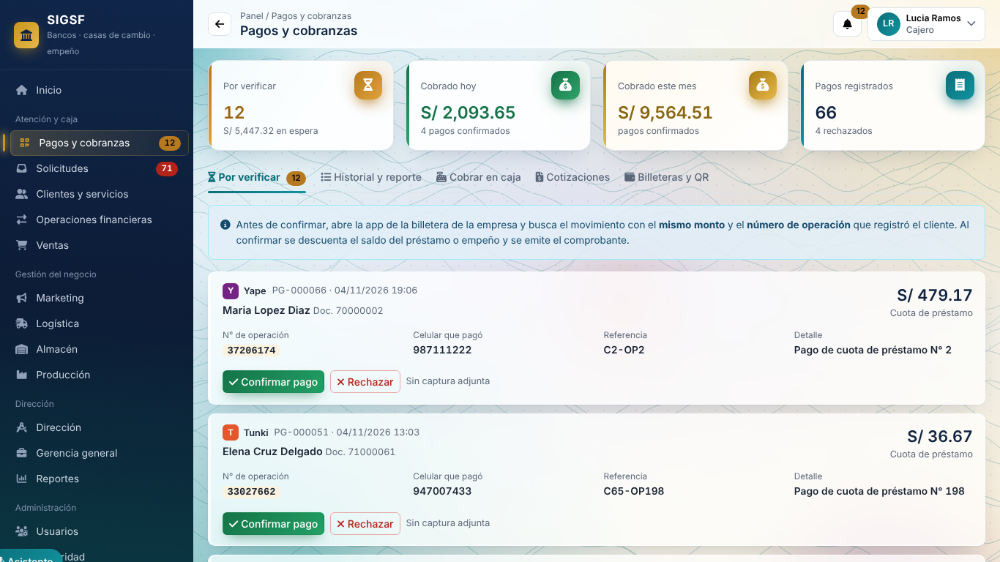

Aplicación, arquitectura, base de datos, seguridad, pruebas y evidencias. Fecha: 10/11/2026.
Miguel Ángel Machaca Machaca · Ricardo Gabriel Cervantes Tejada · Cesar Huaripaucar Huaman.
En Windows, ejecute INICIAR_DEMO.bat con Java 17+. Abra http://localhost:8091/. El modo demo carga datos en memoria y no modifica PostgreSQL.
Cuenta de demostración: admin@sigsf.com / admin123. Para desarrollar, abra esta carpeta en NetBeans. El código, las librerías y el ejecutable están incluidos.
python scripts/preparar_dependencias.py # solo si faltan JAR cd pruebas/e2e npm ci --no-audit --no-fund npx playwright install chromium cd ../.. python scripts/validar_proyecto.py
Las pruebas requieren JDK completo 17+, Python 3.10+ y Node 20+. Presentación editable · Presentación PDF.
| Proceso | Modelo | Implementación |
|---|---|---|
| Acceso y permisos | Diagrama de acceso | Ctx, AuthController, AuthService y FiltroSeguridad |
| Registro y verificación de pago | Diagrama de pago | PagoController, PagoService y DAO |
| Importación y exportación | Diagrama de archivos | ArchivoService, lectores y escritores |
Los archivos Mermaid son editables. La presentación contiene los diagramas principales. La verificación del depósito QR sigue siendo manual.
| Patrón / principio | Aplicación observada |
|---|---|
| MVC | HTML/JS, controladores web, servicios y modelo del dominio |
| DTO | LoginDTO, UsuarioDTO, SesionDTO separan entradas/salidas |
| DAO | Interfaces y variantes JDBC/memoria |
| SRP / DIP | Servicios por responsabilidad, inyección por constructor |
| OCP / ISP | DaoFactory y separación de lectura/escritura |
| LSP | Implementaciones por contrato; validación JDBC pendiente |
Catálogo de 217 tipos Java: atributos, métodos y herencia · Catálogo CSV · Diagrama de clases de pagos · Arquitectura por capas.
El catálogo proviene del AST, sin ejecutar las clases. Se regenera con java scripts/GenerarCatalogoJava.java ..
37 tablas únicas, 287 atributos y 33 relaciones FK extraídas del DDL. Las cardinalidades derivan de nulabilidad y unicidad; no se inspeccionó una base en ejecución.
db/schema.sql contiene DROP TABLE. Instale sobre una BD nueva. El ejecutor probar_postgresql.py crea una BD local nueva antes de cargar esos scripts.
Orden: schema.sql, datos_ejemplo.sql, portal_cliente.sql, seguridad.sql, version_esquema.sql y pagos_qr.sql. El cliente por operación es opcional; la operación por pago también. prestamo.id_operacion no tiene UNIQUE y no garantiza relación 1:1.
La aplicación incluye las vistas implementadas en HTML, Bootstrap y JavaScript. Los scripts de 26 bloques se trasladaron a web/pages/ conservando su orden. La prueba E2E-14 verifica los eventos de Ayuda con la nueva CSP cuando se ejecute en Chromium.
| Vista | Ruta con la demo iniciada |
|---|---|
| Logistica.html | http://localhost:8091/Logistica.html |
| Marketing.html | http://localhost:8091/Marketing.html |
| Ventas.html | http://localhost:8091/Ventas.html |
| almacen.html | http://localhost:8091/almacen.html |
| ayuda.html | http://localhost:8091/ayuda.html |
| clientes y servicios financieros.html | http://localhost:8091/clientes%20y%20servicios%20financieros.html |
| configuracion.html | http://localhost:8091/configuracion.html |
| direccion gerencia.html | http://localhost:8091/direccion%20gerencia.html |
| documento.html | http://localhost:8091/documento.html |
| gerencia general y toma de decisiones.html | http://localhost:8091/gerencia%20general%20y%20toma%20de%20%20decisiones.html |
| index.html | http://localhost:8091/index.html |
| login.html | http://localhost:8091/login.html |
| operaciones financieras.html | http://localhost:8091/operaciones%20financieras.html |
| pagos.html | http://localhost:8091/pagos.html |
| portal-documento.html | http://localhost:8091/portal-documento.html |
| portal-inicio.html | http://localhost:8091/portal-inicio.html |
| portal.html | http://localhost:8091/portal.html |
| produccion.html | http://localhost:8091/produccion.html |
| reportes.html | http://localhost:8091/reportes.html |
| respaldos.html | http://localhost:8091/respaldos.html |
| seguridad.html | http://localhost:8091/seguridad.html |
| solicitudes.html | http://localhost:8091/solicitudes.html |
| splash.html | http://localhost:8091/splash.html |
| usuarios.html | http://localhost:8091/usuarios.html |
| versiones.html | http://localhost:8091/versiones.html |
| welcome.html | http://localhost:8091/welcome.html |

| Reporte / documento | Denominación | Salida |
|---|---|---|
| Pago | PG-%06d | Portal y caja |
| Comprobante confirmado | RC-%06d | HTML imprimible / PDF del navegador |
| Cotización | COT-%06d | HTML imprimible / PDF del navegador |
| Estado de cuenta | Por cliente | Deuda y pagos |
| Pagos y cobranzas | Por estado y fecha | Pantalla y exportación |
| Exportaciones por recurso | Clientes, ventas, pagos y otros | XLSX, CSV y JSON según catálogo |
Numeración definida en Pago y Cotizacion. El proyecto no incluye conciliación automática con bancos ni billeteras reales.
| Recurso | Ubicación / propósito |
|---|---|
| Backend | src/com/utp/sistemafinanciero: controller, service, model, dto, dao, security, web |
| Frontend | web/: vistas, módulos JS, pages/ y vendor/ |
| Librerías | lib/: JDBC PostgreSQL, SLF4J 2.0.16 y Logback 1.5.12 |
| Pruebas | test/, pruebas/e2e/, pruebas/postman/ y pruebas/seguridad/ |
| Logback | src/logback.xml, MDC, acceso, seguridad, errores y rotación |
| Ficheros | Lectura CSV/XLSX con validación y exportación con neutralización de fórmulas |
| Inventario local | evidencias/v5.6.0/sca/inventario_local.json: versiones y SHA256 |
El inventario de dependencias no constituye análisis de CVE. Documento de recursos original.
Controles incorporados: documento JSON completo, claves únicas, máximo 64 niveles, números válidos, UTF-8 estricto, Content-Type application/json y CSP de scripts externos. Se conservan PBKDF2, sesiones, roles, auditoría y controles de ficheros existentes.
La CSP de scripts queda script-src 'self'; script-src-attr 'none'; object-src 'none'. La política de estilos conserva unsafe-inline por la interfaz actual.
El repositorio local conserva el historial recibido. La rama feature/integracion-seguridad-5.6.0 se integra en release/5.6.0 mediante merge, con etiqueta v5.6.0. No hay publicación remota.
git log --graph --decorate --oneline --all git diff v5.5.0..v5.6.0 --stat # Rollback propuesto, en una rama de trabajo: git switch -c rollback/5.6.0 release/5.6.0 git revert -m 1 v5.6.0
El rollback no se ejecutó. Cambios y retest.
El ejecutor unificado prepara compilación, JUnit, sintaxis JavaScript, Newman, entradas adversas y Playwright. Cada etapa registra APROBADO, FALLIDO, BLOQUEADO o NO EJECUTADO. Los informes tienen commit, fecha, alcance y huella SHA256 de las fuentes.
Plan de pruebas por nivelesCI incluye un trabajo de memoria/API/navegador y otro con PostgreSQL 16. Su configuración está entregada; no se ha ejecutado en GitHub. Los reportes se conservan aunque una etapa falle.
Objetivo: verificar acceso, entradas, datos y configuración con pruebas repetibles. Entorno ejecutado: localhost, datos de demostración y DAO en memoria. La matriz conserva las pruebas pendientes y el alcance real.
| ID | Área | Entrada / preparación | Criterio | Implementación | Estado |
|---|---|---|---|---|---|
| PS-01 | Autenticación / sesión | Token inválido y cierre de sesión | 401 y sesión revocada | SeguridadOwaspApiTest / Newman | Aprobado en suites actuales |
| PS-02 | Autorización / IDOR | Cambiar rol o id de cliente | 403 o rechazo de regla | SeguridadOwaspApiTest / Newman | Aprobado |
| PS-03 | Fuerza bruta | 5 claves erróneas | Bloqueo temporal | SeguridadOwaspApiTest | Aprobado |
| PS-04 | SQL injection | Carga SQL en login y consultas parametrizadas | Sin acceso y sin ejecutar SQL de entrada | JUnit memoria / PostgresqlSeguridadIT | Memoria aprobada; JDBC pendiente |
| PS-05 | XSS | HTML en nombre y DOM sin ejecución | Texto literal | Playwright | Histórico; repetir en 5.6.0 |
| PS-06 | Path traversal | Rutas ../ y codificadas | No exponer archivos | SeguridadOwaspApiTest | Aprobado |
| PS-07 | Operaciones financieras | Monto negativo, exceso y tasa manipulada | Rechazo o tasa del servidor | JUnit / Newman | Aprobado en memoria |
| PS-08 | Límites | Cuerpo > 1 MiB y JSON > 64 niveles | Respuesta controlada 400 | JUnit | Aprobado |
| PS-09 | Fuzzing acotado | 20 entradas de sintaxis, tipo y valor | 4xx sin token ni caída del servicio | comprobar_entradas.py | 20/20 aprobadas |
| PS-10 | JSON completo | JSON válido con texto sobrante | 400 sin token | JsonEstrictoTest / API / Python | Corregido y aprobado |
| PS-11 | Deserialización Java | Bytes AC ED 00 05 70 con tipo Java | 415; no deserializar objetos | SeguridadEntradasApiTest / Python | Aprobado; prueba acotada |
| PS-12 | Metadatos de tipo | Campo @class | Solo Map/List, sin instanciación por metadatos | JsonEstrictoTest / revisión | Aprobado dentro del alcance |
| PS-13 | Content-Type / UTF-8 | text/plain, charset no permitido y bytes inválidos | 415 para tipo/charset, 400 para UTF-8 inválido | SeguridadEntradasApiTest | Corregido y aprobado |
| PS-14 | CSP / cabeceras | Scripts externos, eventos y cabeceras | Scripts solo del propio origen | FrontendCspTest / API | Estructura aprobada; navegador pendiente |
| PS-15 | Importación / exportación | XLSX/DTD, ZIP y fórmulas CSV | Rechazar o neutralizar según control | Suites archivos/ | Incluido en JUnit aprobado |
| PS-16 | Vulnerabilidades de componentes | CVE aplicables en JAR y npm | Informe actualizado y triage | Dependency-Check / npm audit | Inventario local; escaneo pendiente de autorización/herramientas |
| PS-17 | Penetración ampliada | ZAP pasivo y activo autenticado | Informe, cobertura, hallazgos y retest | escanear_zap.py | Implementado; Docker no disponible |
| PS-18 | Configuración y persistencia | FK, CHECK, unicidad, rollback y permisos | Restricciones y mínimo privilegio | PostgresqlSeguridadIT | 7 casos compilados; ejecución pendiente |
Entrada: versión identificada, dependencias y datos de prueba. Salida: controles críticos aprobados, hallazgos triados y retesteados, informes DAST/SCA/BD y aceptación del equipo. TLS, restauración y concurrencia real requieren validación adicional.
| Herramienta | Ejecutor / código | Uso |
|---|---|---|
| JUnit | validar_proyecto.py | Compilar y ejecutar las suites |
| Newman | Colección compartible | 26 solicitudes de API |
| Python | comprobar_entradas.py | 20 vectores y 4 comprobaciones específicas |
| Playwright | Pruebas de seguridad E2E | XSS, cabeceras y CSP/ayuda |
| PostgreSQL | probar_postgresql.py | BD nueva y 7 pruebas JDBC |
| ZAP | escanear_zap.py | Pasivo por defecto; --activo para QA desechable |
| SCA | escanear_dependencias.py | Inventario offline; --online exige autorización |
Object v = parseValue();
skipWs();
if (i != s.length()) throw error("Contenido sobrante despues del valor JSON");
return v;Este fragmento está en Json.parseCompleto. Ctx valida el tipo de contenido antes de deserializar y ApiServer traduce TipoContenidoNoSoportadoException a HTTP 415. Los archivos fuente están disponibles en src/.
| Bloque | Resultado | Evidencia |
|---|---|---|
| JUnit | 214 de 214 aprobadas | Registro JUnit |
| Newman | 26 peticiones, 63 aserciones, 0 fallos | Informe XML |
| Entradas adversas | 24 de 24 aprobadas | Detalle JSON |
| Frontend | Sintaxis y referencias de scripts verificadas | Registro de sintaxis |
| Navegador | 14 casos definidos, sin reejecución | Restricción de entorno observada |
| PostgreSQL | 7 casos implementados y compilados; falta psql | Estado |
| ZAP | Ejecutor implementado; falta Docker | Estado |
| SCA | Inventario local generado; CVE no evaluadas | Estado |
Pruebas del código en commit 614f35b. Java 21.0.13 con -source 17 -target 17. El entorno no permite la validación exacta de APIs mediante --release 17. El ejecutor normal sí usa --release 17 con un JDK completo.
La revisión automática bloqueó npm audit porque puede enviar el árbol de dependencias a registry.npmjs.org. No se completó el análisis en línea. Ningún resultado pendiente se contabiliza como aprobado.
Las capturas y 13 E2E del 04/11/2026 son históricas. No demuestran la ejecución de esta versión. Las prioridades de riesgos requieren aceptación del equipo; no se emite aprobación para producción.
Inventario de archivos · Mapa de requisitos · Guion de exposición.
| Herramienta / recurso | Ruta |
|---|---|
| JUnit | https://junit.org/junit4/ |
| Postman / Newman | https://learning.postman.com/docs/reference/newman-cli/command-line-integration-with-newman/ |
| Playwright | https://playwright.dev/docs/test-cli |
| OWASP WSTG | https://wstg.owasp.org/ |
| ZAP | https://www.zaproxy.org/docs/docker/full-scan/ |
| Autenticación ZAP | https://www.zaproxy.org/docs/getting-further/authentication/handling-auth-yourself/ |
| Dependency-Check | https://jeremylong.github.io/DependencyCheck/dependency-check-cli/arguments.html |
| RFC 8259 | https://www.rfc-editor.org/info/rfc8259/ |
| Repositorio declarado | https://github.com/MiguelWaa/SistemaFinanciero |
| Actions declarado | https://github.com/MiguelWaa/SistemaFinanciero/actions |
El repositorio y Actions son las rutas declaradas en la copia recibida. No se verificó su disponibilidad ni se publicaron cambios. La colección Postman incluida se puede importar y compartir dentro del equipo.